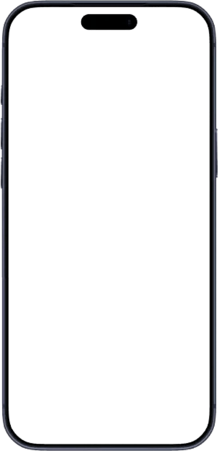
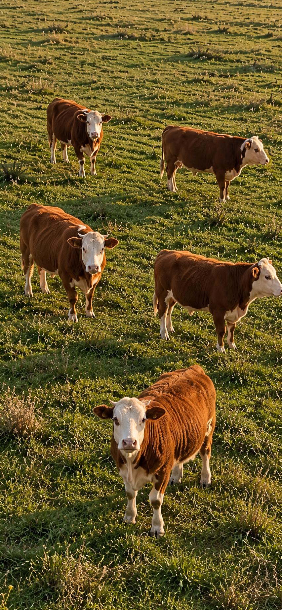

Наши AI-камеры присмотрят за каждым вашим животным
Проведёте животное через проход один раз, дальше наши AI-камеры узнают его сами. Вы будете видеть вес и привес каждого, а если кто-то начнёт хуже есть, узнаете об этом первым. Бирки, ошейники и датчики не понадобятся.
Три шага с вашей стороны, дальше система справляется сама
Один раз через проход
Полминуты на животное, и всё. AI-камеры сверху и сбоку запомнят его со всех сторон, больше от вас ничего не нужно.
Дальше система узнаёт его сама
Днём и ночью, на любой AI-камере фермы. По масти, отметинам и силуэту, примерно так же, как узнаёте его вы.
А вы узнаёте первым
Сообщение придёт на телефон сразу, с понятным объяснением и цифрами. Ничего открывать и проверять не нужно.


Шесть забот, которые мы снимем с вас
Никаких бирок
На животное ничего вешать не нужно. AI-камера видит его так же, как видите вы, и, в отличие от бирки, не теряется и не рвётся.
Вес без весовой
Вес и привес считаются при каждом проходе под AI-камерой. Вам сразу видно, кто прибавляет, а кто стоит на месте.
Здоровье под присмотром
Система запоминает, как каждое животное ведёт себя обычно. Заметит перемену, скажет вам сразу, пока всё ещё поправимо.
Вся ферма в телефоне
Живая картинка со всех AI-камер и карточка на каждое животное. Ферма всегда под рукой: из дома, из машины, из города.
Охрана территории ночью
Если ночью на территории окажется чужой, вам придёт снимок. Камеры по периметру считаем отдельно: их число зависит от длины забора, а не от стада.
Растёт вместе с фермой
От небольшого хозяйства до откормочника на тысячи голов. Захотите добавить AI-камеру, она подключится сама, без нашего выезда.
Три недели вы кормили её как обычно.
А потом стало поздно
Животное теряет аппетит за несколько дней до того, как это станет заметно со стороны. При обходе такое не увидеть, а в тетради не с чем сравнить. И эти дни стоят вам и корма, и привеса.
животное уже недоедает, а со стороны всё выглядит обычно
уходит на обход стада, и всё равно видно не всё
записи, которые потом не с чем сравнить
взвешивание, если оно вообще доходит до весов
Расскажите про свою ферму
Пять вопросов, и всё. Ответы придут нам в WhatsApp одним сообщением, печатать ничего не придётся, а цену назовём уже по вашим цифрам.
Остались вопросы без ответа
Всё поголовье на сегодня
Здесь пока пусто
На откорме животные идут через проход плотнее, поэтому вам понадобится меньше проходов
Здесь пока пусто
Вся территория. Точно знать не обязательно, примерного числа хватит
Здесь пока пусто
Огороженные места, где животные стоят группами
Здесь пока пусто
Те же AI-камеры ночью смотрят за периметром и пришлют вам снимок, если появится чужой
Здесь пока пусто
Предварительно получается
- Проходов
- —
- AI-камер на проходы
- —
- AI-камер на загоны
- —
- AI-камер на охрану
- —
- AI-камер всего
- —
- Компьютеров
- —
Камеры на проходах дают вес и узнают животное. Камеры над загонами видят, кто сколько прошёл и сколько времени провёл у корма: без них не будет тревог по здоровью.
Как ответите на вопросы слева, здесь появится, сколько камер понадобится вашей ферме.
Точное число камер подберём вместе, когда посмотрим вашу ферму.
Расскажите про свою ферму, и мы подберём то, что нужно именно вам
Сколько голов, сколько проходов, какие камеры уже стоят. Соберём комплект под вашу ферму и назовём цену. Разговор ни к чему не обязывает.